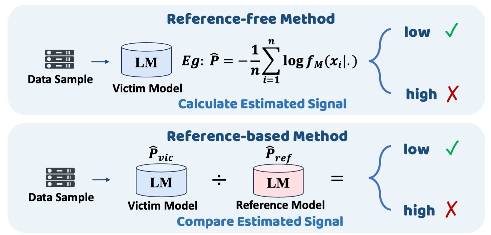

About Me
I am currently a first-year PhD student at the University of Queensland (UQ), Australia. Prior to this, I earned my Bachelor's degree from Chongqing University (CQU). During my research journey, I am super fortunated to be advised by Dr. Miao Xu at UQ and have close collaboration with Dr. Lei Feng at SEU and Dr. Shuo He at NTU.My research interests lie in AI safety, with a particular focus on understanding and mitigating safety vulnerabilities in multimodal LLMs and LLM-based agents. I am especially interested in exploring three questions:
- How and why are multimodal models vulnerable to poisoning or evasion attacks?
- Can we defend multimodal models more efficiently and practically?
- How can we red-team multimodal models with more realistic and practical attacks?
Selected Publications and Preprints
(* indicates equal contribution, † indicates corresponding author)
Test-Time Attention Purification for Backdoored Large Vision Language Models
We propose CleanSight, a training-free, plug-and-play defense against backdoor attacks on large vision-language models based on the finding of attention stealing and the technique of visual token pruning.

Defending Multimodal Backdoored Models by Repulsive Visual Prompt Tuning
We defend backdoored CLIP-type multimodal models using Repulsive Visual Prompt Tuning (RVPT), which tunes only visual prompts on a few clean samples and uses a feature-repelling loss to make the model ignore trigger features. The defense is effective, efficient, and generalizable.

A Closer Look at Backdoor Attacks on CLIP
We study how backdoor attacks change CLIP by breaking image features into patches, attention heads, and MLPs, we find different attacks infect different parts of the model, and we use these findings to detect and repair infected parts (or filter suspicious samples) at inference time.

Towards Reverse Engineering of Language Models: A Survey
We provide a comprehensive survey on reverse engineering techniques for language models, covering various attacks that aim to access model internals (e.g., architecture), training data, or user prompt, while also reviewing existing protective strategies against these attacks.
Tuning Vision-Language Models with Candidate Labels by Prompt Alignment
We present the first study on fine-tuning vision-language models when only candidate (ambiguous) labels are available, and propose a framework that disambiguates candidate labels by aligning the learnable and handcrafted prompt predictions, to improve robustness to label ambiguity.
Tokenswap: Backdoor Attack on the Compositional Understanding of Large Vision-Language Models
We propose TokenSwap, a stealthy backdoor attack targeting the compositional understanding of large vision-language models to make them bags-of-words.
Improving Generalizability and Undetectability for Targeted Adversarial Attacks on Multimodal Pre-trained Models
We propose Proxy Targeted Attack (PTA), enabling adversarial examples to generalize to semantically similar targets while remaining on-manifold to evade anomaly detection, revealing a new vulnerability in large multimodal models.
Defending Against Partial-Label Backdoor Attacks via Feature Regularization and Label Confusion
We discover that partial label learning is vulnerable to backdoor attacks and propose a defense via feature-level regularization using PLL-supervised contrastive learning and label-level confusion by injecting auxiliary labels into suspicious candidates to disrupt backdoor mappings.
Towards Safer Large Reasoning Models by Promoting Safety Decision-Making before Chain-of-Thought Generation
We find that CoT degrades reasoning model safety and propose PreSafe, which extracts safety signals from a CoT-disabled model and backpropagates them into the LRM's latent space via an auxiliary head, enabling refusal before CoT generation begins.